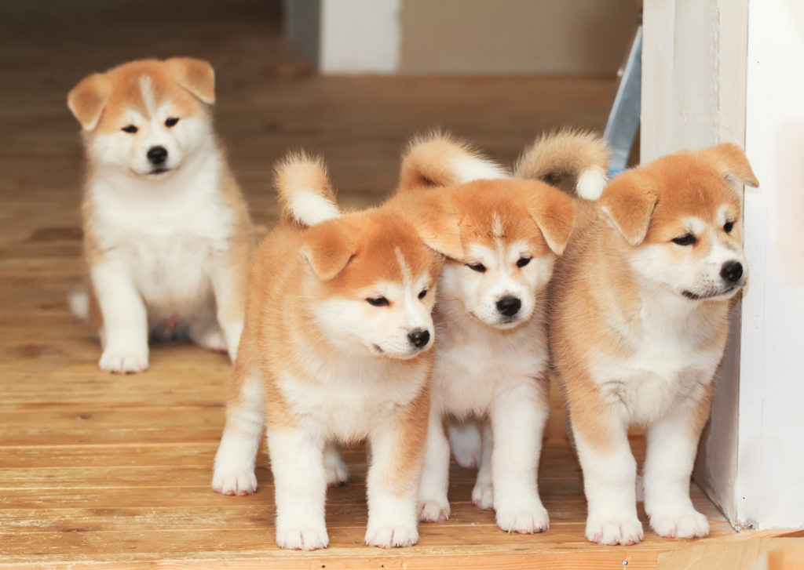

Akita Inu
Az akita inu tulajdonságai
Az Akita egy magának való kutya, ezért nem szereti a zsúfolt kutyafuttatók látogatását vagy a sok nyüzsgéssel járó családi összejöveteleket. Bár ennek a japán kutyafajtának is szüksége van a szoros családi kapcsolatokra, általában a gazdi elegendő társaságot nyújt a számára. Gondozó családjához tartozó gyerekekkel szemben türelmes és szeretetteljes, nyugalomra vágyó természete miatt azonban nem jól tűri a vad játékokat az idegen gyerekekkel.
Az akita inu ápolása
Az egészséghez hozzátartozik a megfelelő ápolás is. Az Akita inu remek öntisztuló mechanizmussal rendelkező durva, inkább rövid szőrzete, nem igényel túl sok ápolást. A vedléskor (évente kétszer) persze ez másként van. A régi, elhalt, szőrzetet el kell távolítani a bundájából, ilyenkor elkerülhetetlen a napi alapos átkefélés.
Az akita inu története
Származási országában, Japánban az Akita már jóval a Hacsi nevű kan előtt ismert volt. Agyagedényeken vagy bronzharangokon talált kutyaábrázolások arra engednek következtetni, hogy az eredeti kutyafajta története közel 5000 éves. Molekuláris genetikai vizsgálatokkal bebizonyították, hogy az Akita, Shiba, a Csau-csau és a Shar Pei genetikailag a farkas legközelebbi rokonai, így az ázsiai térség legrégebbi kutyafajtáihoz tartoznak. Noha számos elmélet létezik a japán nemzeti kutyafajta pontos eredetére vonatkozóan, az biztos, hogy az első fajtatiszta egyedeket Japán Akita kutya nevű régiójában fedezték fel, ahonnan aztán nem csak az egész országot, hanem az európai és amerikai kontinenst is meghódították. A japán Akita Inu és az Amerikai Akita 1945-ig tiltott volt az 1931-ben nemzeti ereklyévé nyilvánított kutyafajtának a kivitele Japánból. A fajta állományát erősen megtizedelték a második világháború után. A többi egyed is rendkívül különböző volt külsejüket és tulajdonságaikat illetően. Az eltérő Akita-típusokból két fajtavonal alakult ki: az itt bemutatott japán Akita kutya és az “amerikai Akita” (németjuhász Akita), amit a háború után az amerikai katonák vittek magával USA-ba és ott tovább tenyésztették. A japán tenyésztők az eredeti fajta frissítését tűzték ki célul, ezért keresztezték az úgynevezett “Matagi Akitas” kutyával. Mindkét fajtát –az eredeti, kicsit alacsonyabb japánt és a nagyobb, sötétebb amerikai vonalat is- önálló kutyafajtaként ismeri el az FCI szövetség. Alkalmazása Az Akitát eredetileg medvék, vaddisznók, szárnyasok vadászatához használták. Őrző és teherhordó kutyaként is korán alkalmazták ezt a bátor és erős fajtát. A 19. században nagyon kedvelt kegyetlen kutyaviadalokon is előfordultak, ezeket azonban 1908-ban betiltották Japánban. Annak érdekében, hogy a harcikutyák még nagyobbak és erősebbek legyenek Tosa és Masztiff kutyákkal keresztezték őket. Ma már leginkább családi illetve társas kutyaként szolgálnak, így teljesen elvesztették munkakutya szerepüket. Ennek ellenére ereje, védelmező és vadász ösztöne még a mai egyedekben is fellelhető. Az értelmes fizikai és szellemi leterhelés illetve a következetes nevelés elengedhetetlen feltétel ahhoz, hogy az Akitát családi kutyaként lehessen tartani. Az akita inu külseje Bár az Akita a spitzek csoportjába tartozik, mely nevet általában a kis testű kutyákkal szokás összefüggésbe hozni, ez a japán kutyafajta mérete miatt mégis impozáns kivételt képez. 70 cm-es marmagasságával az Akita kétségtelenül egy nagy testű kutyának számít, melyet izmos és erős testfelépítése miatt a szó legszorosabb értelmében nehéz kezelni. Széles, redőzött homloka és karakteres háromszögformájú álló fülei fölényességet és méltóságot sugároznak. Jellemző jegye a szorosan visszakanyarodó farok, melyet az Akita a hátán hord.